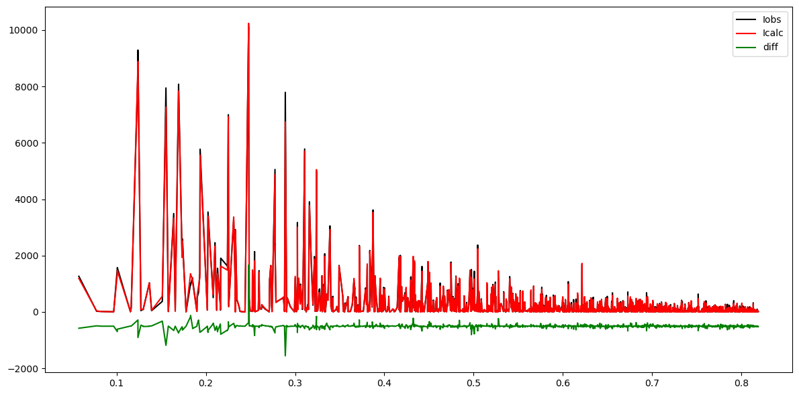

[1]:
import numpy as np
import matplotlib.pyplot as plt
from pyobjcryst.crystal import *
from pyobjcryst.diffractiondatasinglecrystal import *
# Example structure and data from http://crystallography.net/cod/1550649.html
c = create_crystal_from_cif("http://crystallography.net/cod/2016712.cif")
d = create_singlecrystaldata_from_cif("http://crystallography.net/cod/2016712.hkl", c)
[2]:
s = d.GetSinThetaOverLambda()
obs = d.GetIobs()
calc = d.GetIcalc()
plt.figure(figsize=(12,6))
plt.plot(s, obs, 'k', label='Iobs')
plt.plot(s, calc, 'r', label='Icalc')
plt.plot(s, calc - obs - 0.05 * obs.max(), 'g', label='diff')
plt.legend()
plt.tight_layout()
========================== WARNING =========================
In ScatteringPowerAtom::GetTemperatureFactor():
Anisotropic Displacement Parameters are not currently properly handled
for Debye-Waller calculations (no symmetry handling for ADPs).
=>The Debye-Waller calculations will instead use only isotropic DPs
